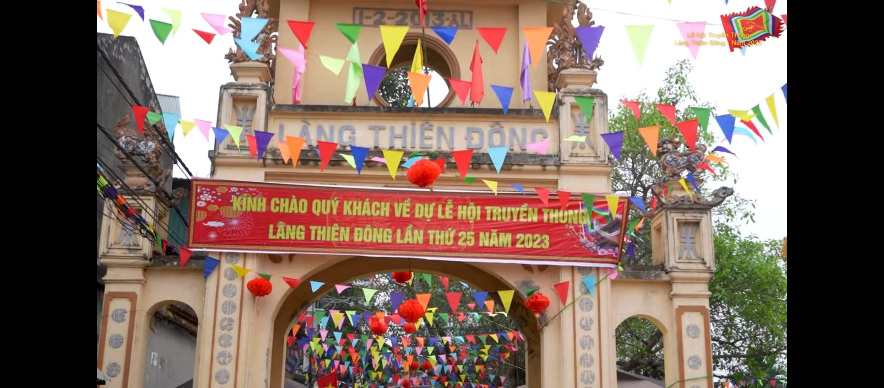

QUÊ HƯƠNG TÔI THÔN THIÊN ĐÔNG XÃ MỸ HƯNG HUYỆN THANH OAI THÀNH PHỐ HÀ NỘI
&&&&&
1. Giới thiệu khái quát về thôn Thiên Đông
Thôn Thiên Đông là một thôn thuộc xã Mỹ Hưng, huyện Thanh Oai, tỉnh Hà Nội, Việt Nam. Với diện tích khoảng 1,67 km², thôn có 220 hộ dân, tổng số dân khoảng 900 người. Thôn Thiên Đông nằm trong khu vực vùng đồng bằng sông Hồng, cách trung tâm Hà Nội khoảng 30 km về phía tây nam. Thôn có địa hình phẳng, độ cao trung bình khoảng 12 mét so với mực nước biển. Thôn có một số con đường lớn như đường quốc lộ 21B và đường tỉnh lộ 421, giúp kết nối với các khu vực lân cận. Thôn Thiên Đông là một nơi có nền kinh tế chủ yếu là nông nghiệp, với một số sản phẩm chính như lúa gạo, rau củ quả và thủy sản. Thôn cũng có một số cơ sở sản xuất và thương mại nhỏ,về tín ngưỡng làng có 2 tôn giáo chính là phật giáo và thiên chúa giáo.